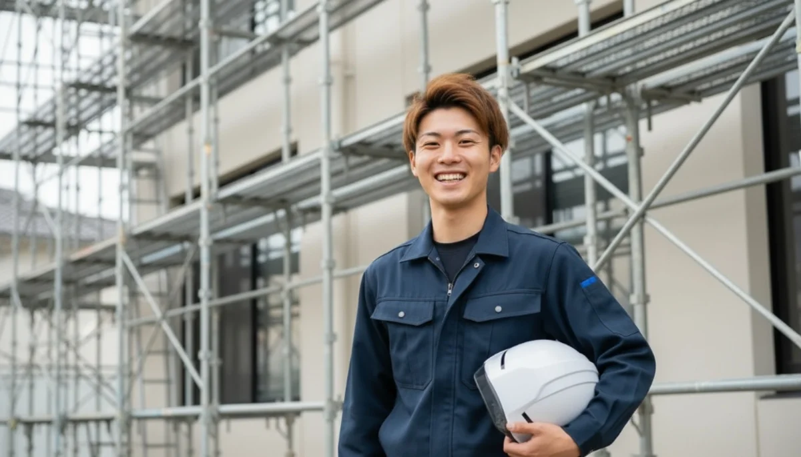
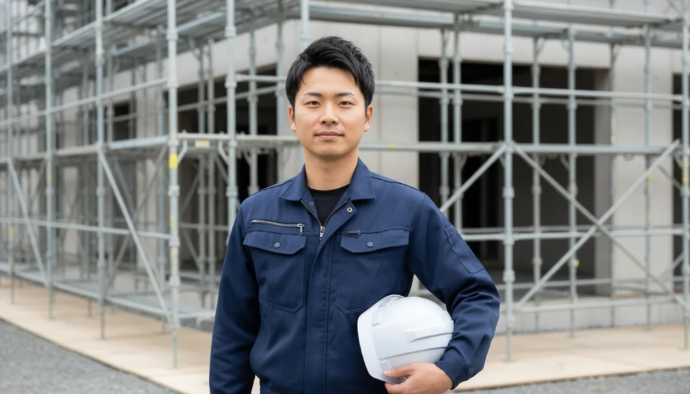

RECRUIT
蒼翔の採用情報
「キツい・汚い・危険」を、
過去のものにする。
過去のものにする。
※写真は構成案用のAIイメージです。後日、実際の現場写真へ差し替えます。
株式会社蒼翔（SOSHOU）は、建設業界の古い常識を根本から壊すために生まれた次世代型のプロ集団です。
最新フルハーネス等・安全装備の全額支給、残業のないスマートな働き方、そして天候に左右されない業界最高水準の「完全月給制」。
「背中を見て盗め」なんて時代遅れなことは言いません。
ヤンチャな若手も、家族の未来を守りたい経験者も、理屈からロジカルに育成し、等しくプロフェッショナルとして主役になれる場所です。
Career Path
蒼翔での成長ステップ
STEP 1: 未経験・見習いスタート（入社1年目）
まずは道具の名前を覚えるところから。資材の運搬や、先輩のサポート（下回り）を通じて現場の基本と安全を学びます。怒鳴られたりはしません、iPadの動画マニュアルもフル活用してロジカルに育成します。
STEP 2: 足場・鉄骨とび工（入社2〜3年目）
玉掛けや足場などの国家資格（費用は会社が全額負担！）を取得。実際に高所に上り、花形である足場組みや鉄骨のジョイントを担当します。ここまで来れば、一人前の職人として業界どこでも通用します。
STEP 3: 職長・現場監督（入社4年目〜）
職長教育を修了し、1つの現場を統括するリーダーへ。安全管理、ゼネコンとの打ち合わせ、後輩の育成などマネジメント業務を中心に行います。業績給も大きく跳ね上がり、年収700万〜1000万が見えてきます。
Jobs
募集職種・要項
鳶職人（未経験スタート）
職長候補・現場監督（経験者）

鳶職人（未経験・見習い）
体力と「やってやる！」という熱意があれば、今のスキルは一切問いません。まずは安全第一で、先輩の補助作業からスタート。最新のフルハーネスや腰道具はすべて新品を会社側で買い揃えてプレゼントします。
| 月給 | 300,000円〜 ＋ 業績賞与年2回 ※天候によって出勤がなくなり給与が下がるようなことはありません。完全月給制です。 |
|---|---|
| 勤務時間 | 8:00〜17:00（休憩合計120分） ※残業は月平均10時間以下、17時撤収を徹底しています。 |
| 休日休暇 | 完全週休二日制（日・祝・他1日シフト休）、GW、夏季・年末年始休暇 |
| 必須要件 | 普通自動車免許（AT限定可）のみ。 中卒・高卒歓迎。ヤンチャしてた子も礼儀からしっかり教えます！ |

職長候補・現場監督（経験者）
あなたの経験と資格を、蒼翔で爆発させてください。前職での「サービス残業」や「自腹購入」といった理不尽な環境を捨て、クリーンで最先端な元請け現場で力を発揮していただきます。
| 月給 | 450,000円〜600,000円 ＋ 現場利益に応じた還元ボーナス |
|---|---|
| 勤務時間 | 8:00〜17:00（休憩合計120分） ※現場の段取りは全てiPadでシステム化されており、書類作成のための無駄な残業はありません。 |
| 休日休暇 | 完全週休二日制（日・祝・他1日シフト休）、有給消化推奨 |
| 必須・歓迎要件 | 鳶職経験3年以上。 【歓迎資格】足場組み立て等作業主任者、玉掛け、職長・安全衛生責任者教育など |
FAQ
よくある質問
鳶職や建設業の経験が全くありませんが大丈夫ですか？
全く問題ありません。現在のスタッフも半数は異業種（飲食業等）や高校卒業直後の未経験からスタートしています。まずは道具を覚えたり、先輩のサポートをする「下回り」と呼ばれる安全なポジションからゆっくり育てますのでご安心ください。
ヘルメットや安全帯、工具などは自分で買う必要がありますか？
いいえ、蒼翔では「職人の命を守る装備に自腹を切らせない」という方針のため、超高価な最新の「フルハーネス型安全帯」をはじめ、ヘルメット、作業着（夏は空調服、冬は電熱ベスト）、腰道具一式をすべて【会社が全額負担】して新品をプレゼントします。
建設業は「雨の日は休み（日給が減る）」イメージがありますが？
蒼翔は日給月給制ではなく【完全月給制（固定給）】を採用しています。そのため、台風や休工などの天候理由で現場が休みになったとしても、月のお給料が減らされることは絶対にありません。安定して家族を養えます。
本当に残業はないでのすか？
はい、月平均の残業時間は10時間未満です。現場は17時に徹底して作業を終了し、iPadのクラウドシステムを利用して帰りの車内や現場で日報を終わらせるため、事務所に帰ってから夜遅くまで事務作業をするような古い風習は撤廃しています。